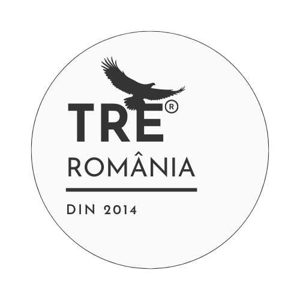

2024 – Un An Important pentru TRE®️ România
După provocările pandemiei – mutarea cursurilor online și pierderea spațiului drag „Hermitage" – anul 2024 a fost dedicat reconstruirii și consolidării prezenței noastre. Am reușit să punem bazele unei asociații funcționale, am publicat o carte importantă semnată de Dr. David Berceli în limba română, am lansat site-ul web oficial TRE®️ România și am inițiat un program de mentorat pentru formarea viitorilor mentori educaționali.
Asociația TRE®️ România
Suntem bucuroși să anunțăm că doamna Doina Raita din București s-a alăturat consiliului nostru de conducere în 2024. De asemenea, numărul membrilor asociației a crescut la 24, iar în 2025 ne propunem să continuăm această expansiune.

Cartea TRE®️ – Dr. David Berceli
În 2024, am colaborat cu editura Herald pentru traducerea și publicarea cărții lui Dr. David Berceli – „Procesul revoluționar de eliberare a traumei, stresului și tensiunii din corp". Cu sprijinul unei echipe de furnizori TRE®️, am asigurat o traducere fidelă mesajului autorului. Cartea este acum disponibilă pentru achiziție pe site-ul Editura Herald.
Vezi și lansarea de carte de la Bookfest 2024 →
Website și Rețelele Sociale
Site-ul oficial TRE®️ România a evoluat semnificativ în 2024, iar cu ajutorul comunității noastre, ne asigurăm că va fi complet optimizat în 2025. De asemenea, prezența noastră pe rețelele sociale precum Instagram, Facebook și YouTube, a crescut considerabil. Pentru a susține această creștere, vom colabora cu trei asistenți social media în 2025.
Educație
În octombrie 2024, am lansat un Program de Mentorat pentru a forma mentori care să sprijine participanții în procesul de certificare. Două furnizoare TRE®️, doamnele Georgiana Sfetea din Brașov și Crina Tudor din Timișoara, ni s-au alăturat pentru a contribui la acest program.